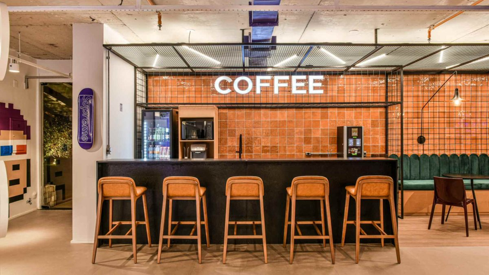

BRAVO TATUÍ, REALIZANDO SONHOS!
CONHEÇA NOSSOS SERVIÇOS

Bravo Tatuí
Ideal para eventos e casamentosO ‘Bravo Tatuí’ possui uma diversidade de formações instrumentais para seu evento e também a chance de personalizar sua orquestra para o momento perfeito!

IMBT
Para quem quer estudar músicaO ‘Instituto Musical Bravo Tatuí’ oferece aulas de uma grande variedade de instrumentos e níveis para todas as idades!

Coffee Bravo
Aproveite nosso cardápioVenha se deliciar com nosso cardápio em um espaço acolhedor e aconchegante, ideal para as suas melhores manhãs e tardes!
A ARTE DA AUTOSSUPERAÇÃO
Na filosofia de Friedrich Nietzsche, o ser humano não é concebido como um fim estático, mas sim como uma ponte contínua em direção ao Übermensch (o Além-do-Homem). Essa visão desafia cada indivíduo a transcender a mediocridade cotidiana, quebrar limitações pré-estabelecidas e exercitar a autossuperação constante (Selbstüberwindung), tornando-se artífice de seus próprios valores e transformando a existência em arte viva.
“Sem a música, a vida seria um erro.
— Friedrich Nietzsche, Crepúsculo dos Ídolos
No Instituto Musical Bravo Tatuí, acolhemos essa sabedoria em sua mais sublime essência. Acreditamos que a maestria instrumental não se resume a notas em uma partitura: é a expressão pura da paixão disciplinada e da busca pela perfeição humana. Do primeiro contato com um instrumento às apresentações orquestrais inesquecíveis, impulsionamos cada aluno e músico a superar a si mesmo e a realizar os sonhos mais grandiosos através da arte do som.